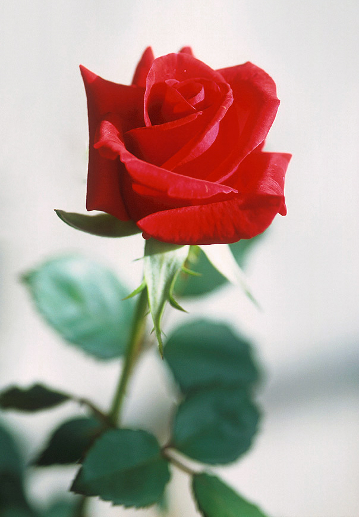

Există dovezi care certifică faptul că istoria trandafirilor roșii datează de acum zeci de mii de ani. Aceste flori au jucat un rol semnificativ în istoria Chinei, a Europei sau a statelor din zona Mării Mediteraneene. Ca semnificație, trandafirii roșii reprezintă același lucru fie că vorbim de țări din Asia, Europa, America sau Africa. Simbolistica lor este universal-valabilă. Iar în zile speciale, precum cea de Sfântul Valentin, trandafirii roșii reprezintă cadoul cel mai la îndemână și cel la care apelează cei mai mulți bărbați. În plus, datorită popularității lor, aceste flori sunt disponibile în orice perioadă a anului.
Du-te pe pagina 1 Du-te pe link exterior 